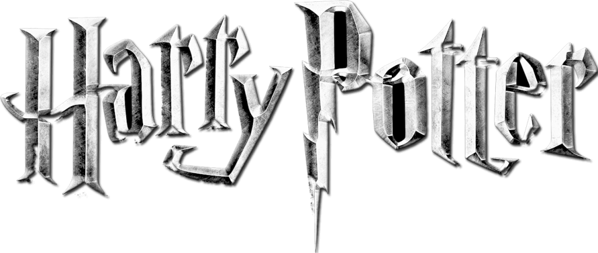
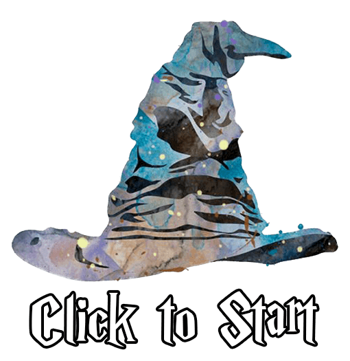
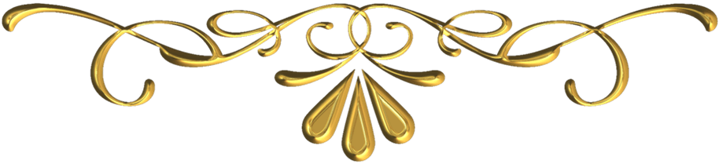
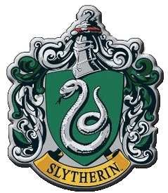
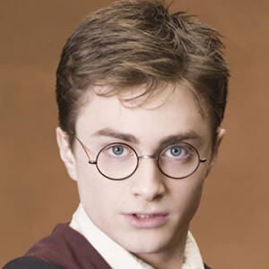

question

btn type A
btn type B

p_type
explain
dorm_explain
* 케미가 가장 잘 맞는 영화 속 캐릭터 *
character

다시 하기
제작 도움: 조코딩 유튜브 채널
Copyright 2021 RAZZLEDEV all rights reserved
contact us at razzledev0@gmail.com
업데이트 로그
해리포터 기숙사 테스트
당신은 어떤 기숙사가 적합할지 테스트 해보세요!